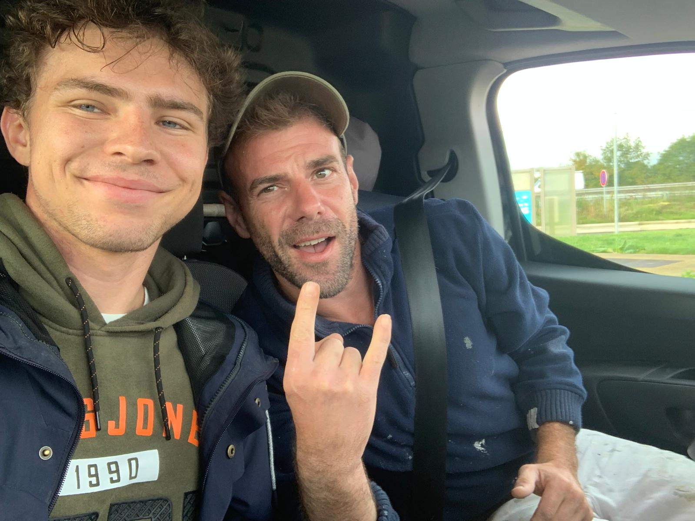
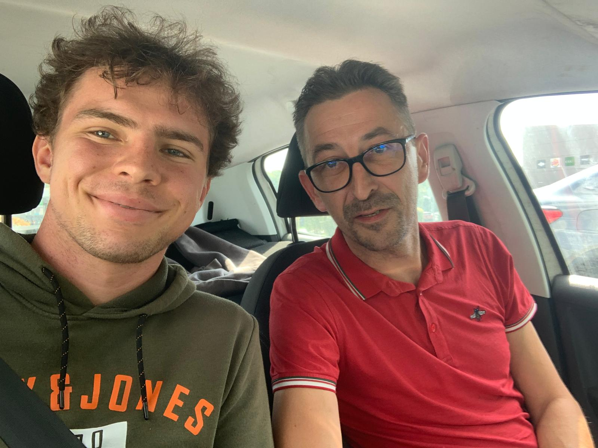
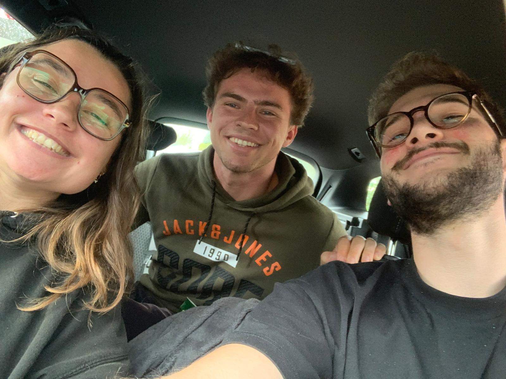

Hitchhiking, or just going with the flow.
On a wet Monday morning I left Bodo's apartment and went to buy some fruits for and a sandwich for the trip to come. At this point, I hadn't set a goal yet. I didn't know, if I wanted to go to Dijon, or even Paris. I just went to the nearest exit onto a highway, and put my thumb up.
Well, not really. I also wrote a sign, which probably saved me. The sign said "Limonest", the name of the town after a big gas station. Almost directly a guy stopped.
 My first hitch of the day.
I'm really sorry to all the people that I met whose names I just can not remember. They just vanish from my head. Luckily, the memories stay. He had forgotten something at home in Limonest, that's why he took me. Had I not written the sign, he wouldn't have bothered.
After that, I spent a good chunk of an hour at the entrance of the gas station, right next to the highway, before Pierre picked me up. He, just as the French couple on Friday, had also seen my sign saying Dijon and turned back to pick me up. After some time he told me I could spend the night at his place. This would've turned out great actually, had he not been invited to some friend...
 Thanks, Pierre.
I decided to try my luck and told him to leave me at the last gas station before Dijon. That way, I could hitch a ride to Dijon, in the case I didn't get one to Paris. After only standing at the exit of the gas station for 15 minutes, a young couple from Paris stopped and asked me if I really wanted to go to Paris. After me reluctantly agreeing, they pushed together their stuff in the back and got me in the back seat. With them, I drove the remaining 350 kilometers to Paris.
 Super Cool Couple.